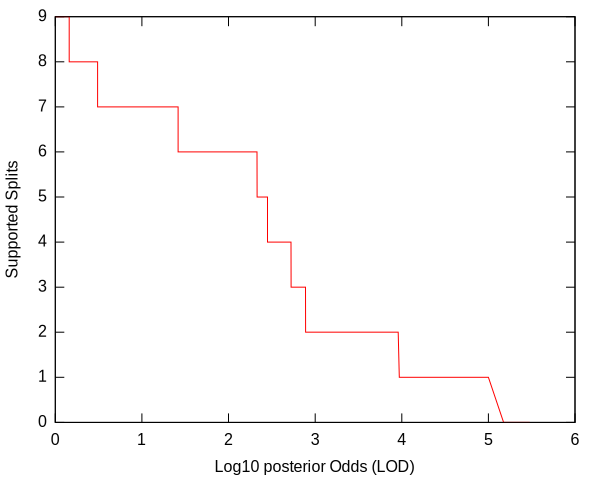
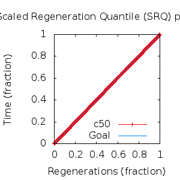
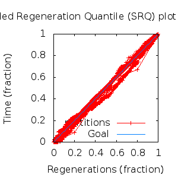

MCMC Post-hoc Analysis: 12 sequences
Data & Model
| Partition | Sequences | Lengths | Alphabet | Substitution Model | Indel Model | Scale Model |
|---|
| 1 |
E5_alpha1_alpha2_epsilonzeta_aa.reduced.fas |
72 - 93 |
Amino-Acids | S1 = lg08+f |
I1 = rs07 |
scale1 ~ gamma[0.5,2] |
Scalar variables
| Statistic | Median | 95% BCI | ACT | ESS | burnin | PSRF-CI80% | PSRF-RCF |
|---|
| prior |
-176.2 |
(-204.9, -148.7) |
23.3 |
11585 |
363
|
0.9997 | 1.001
|
| prior_A1 |
-182.1 |
(-207.8, -158.7) |
9.569 |
28217 |
166
|
0.9996 | 0.9999
|
| likelihood |
-1646 |
(-1665, -1628) |
11.36 |
23769 |
179
|
0.9999 | 0.998
|
| posterior |
-1823 |
(-1849, -1800) |
22.3 |
12106 |
363
|
0.9997 | 1.004
|
| Heat.beta |
1 |
| | | | | |
| Scale[1] |
4.826 |
(2.668, 7.845) |
1.142 |
236433 |
158
|
0.9998 | 0.9989
|
| f:pi[A] |
0.04924 |
(0.03061, 0.07064) |
8.271 |
32642 |
309
|
0.9997 | 0.9979
|
| f:pi[R] |
0.05727 |
(0.03363, 0.08345) |
7.855 |
34371 |
354
|
1.001 | 0.9972
|
| f:pi[N] |
0.02014 |
(0.008095, 0.03575) |
7.925 |
34069 |
307
|
1 | 1.002
|
| f:pi[D] |
0.01382 |
(0.0015, 0.03161) |
12.76 |
21152 |
450
|
1 | 0.9916
|
| f:pi[C] |
0.05164 |
(0.03259, 0.07311) |
7.55 |
35763 |
342
|
0.9999 | 0.9981
|
| f:pi[Q] |
0.03502 |
(0.01831, 0.05482) |
8.982 |
30061 |
648
|
1.001 | 1.003
|
| f:pi[E] |
0.0127 |
(0.002433, 0.02708) |
8.941 |
30199 |
472
|
0.9998 | 1.003
|
| f:pi[G] |
0.02397 |
(0.008639, 0.04352) |
8.025 |
33645 |
564
|
0.9998 | 1.001
|
| f:pi[H] |
0.03242 |
(0.01744, 0.05071) |
8.173 |
33035 |
253
|
1 | 1.009
|
| f:pi[I] |
0.08176 |
(0.06152, 0.1035) |
8.928 |
30241 |
423
|
1 | 0.9946
|
| f:pi[L] |
0.1826 |
(0.1486, 0.2177) |
7.266 |
37159 |
358
|
0.9997 | 0.998
|
| f:pi[K] |
0.02179 |
(0.008631, 0.03839) |
7.763 |
34778 |
423
|
1 | 1.008
|
| f:pi[M] |
0.0228 |
(0.01242, 0.03483) |
8.313 |
32480 |
381
|
1 | 0.9911
|
| f:pi[F] |
0.07697 |
(0.05469, 0.1007) |
7.903 |
34164 |
432
|
0.9999 | 1.002
|
| f:pi[P] |
0.03622 |
(0.01665, 0.05989) |
8.255 |
32706 |
538
|
1 | 0.9982
|
| f:pi[S] |
0.05618 |
(0.03602, 0.0793) |
7.843 |
34423 |
234
|
0.9995 | 0.9983
|
| f:pi[T] |
0.05491 |
(0.03633, 0.0763) |
7.654 |
35276 |
145
|
1 | 0.9974
|
| f:pi[W] |
0.01871 |
(0.007173, 0.03315) |
8.295 |
32550 |
425
|
1 | 1.004
|
| f:pi[Y] |
0.02509 |
(0.01334, 0.03906) |
7.823 |
34513 |
584
|
1 | 0.9922
|
| f:pi[V] |
0.1116 |
(0.08631, 0.1389) |
7.827 |
34494 |
242
|
0.9998 | 1.003
|
| rs07:mean_length |
7.005 |
(4.383, 10.56) |
2.787 |
96863 |
207
|
1.001 | 0.9991
|
| rs07:log_rate |
-3.652 |
(-4.14, -3.156) |
2.589 |
104298 |
128
|
1 | 0.9962
|
| |A1| |
160 |
(152, 169) |
3.188 |
84690 |
122 |
0.9167 | 0.9991
|
| #indels1 |
22 |
(19, 26) |
8.552 |
31570 |
140 |
0.8 | 1
|
| |indels1| |
140 |
(123, 159) |
2.49 |
108429 |
112 |
0.9565 | 1.002
|
| #substs1 |
283 |
(275, 290) |
4.601 |
58689 |
180 |
0.9 | 0.9986
|
| Scale1*|T| |
5.591 |
(4.744, 6.497) |
2.92 |
92457 |
211
|
1 | 0.9983
|
| |A| |
160 |
(152, 169) |
3.188 |
84690 |
122 |
0.9167 | 0.9991
|
| #indels |
22 |
(19, 26) |
8.552 |
31570 |
140 |
0.8 | 1
|
| |indels| |
140 |
(123, 159) |
2.49 |
108429 |
112 |
0.9565 | 1.002
|
| #substs |
283 |
(275, 290) |
4.601 |
58689 |
180 |
0.9 | 0.9986
|
| |T| |
1.161 |
(0.6362, 1.812) |
1.008 |
267851 |
135
|
1 | 1.001
|
Phylogeny Distribution


Alignment Distribution
Partition 1
|
|
|
Diff |
|
Min. %identity |
# Sites |
Constant |
Informative |
| Initial |
FASTA |
HTML |
Diff |
|
2.3% |
93 |
1 (1.08%) |
82 (88.2%) |
| Best (WPD) |
FASTA |
HTML |
|
AU |
3.68% |
161 |
2 (1.24%) |
138 (85.7%) |
Mixing
Statistics: | scalar burnin | 648 | | scalar ESS | 1.159e+04 | | topological ESS | | | ASDSF | NA | | MSDSF | NA | | PSRF CI80% | 1.001 | | PSRF RCF | 1.009 |
|  |
Analysis
directory: /work/awillemsen/bali-phy/AlphaPVs_E5_aa_new_reduced
version: 3.3
| chain # | burnin | subsample | Iterations (after burnin) | command line | subdirectory |
|---|
| 1 |
10000 |
1 |
90000 |
bali-phy E5_alpha1_alpha2_epsilonzeta_aa.reduced.fas -s 87231 --smodel lg08 -i 100000 -n AlphaPVs_E5_red_alpha1_alpha2_epsilonzeta |
AlphaPVs_E5_red_alpha1_alpha2_epsilonzeta-1 |
| 2 |
10000 |
1 |
90000 |
bali-phy E5_alpha1_alpha2_epsilonzeta_aa.reduced.fas -s 93459 --smodel lg08 -i 100000 -n AlphaPVs_E5_red_alpha1_alpha2_epsilonzeta |
AlphaPVs_E5_red_alpha1_alpha2_epsilonzeta-2 |
| 3 |
10000 |
1 |
90000 |
bali-phy E5_alpha1_alpha2_epsilonzeta_aa.reduced.fas -s 84736 --smodel lg08 -i 100000 -n AlphaPVs_E5_red_alpha1_alpha2_epsilonzeta |
AlphaPVs_E5_red_alpha1_alpha2_epsilonzeta-3 |
| P(data|M) = -1665.941 +- 0.237
|
Complete sample: 250
topologies |
95% Bayesian credible interval: 19 topologies |
Model and priors
Tree (+priors)
| topology | ~ uniform on tree topologies |
| branch lengths | ~ iid[num_branches[T],gamma[0.5,div[2,num_branches[T]]]] |
Substitution model (+priors)
| S1 | = |
lg08+f
| f:pi | ~ | dirichlet_on[letters[@a],1]
|
|
Indel model (+priors)
| I1 | = |
rs07
| rs07:log_rate | ~ | laplace[-4,0.707]
|
| rs07:mean_length | ~ | exponential[10,1]
|
|
Scales (+priors)
{kind=link}
{kind=link}
{kind=link}
{kind=link}
{kind=link}
{kind=link}
{kind=link}
{kind=link}